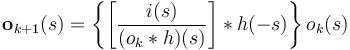
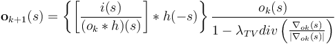

Ops Deconvolution
Overview
ImageJ Ops is an extensible framework for algorithms. Deconvolution is a process that is used to de-blur images. When implemented with appropriate constraints deconvolution can also de-noise images. The imagej-ops project gives algorithm developers a framework to implement, organize and test various approaches to deconvolution.
Current work is focused on:
1. Implementation of Richardson Lucy with Total Variation Regularization, Vector Acceleration and Non-Circulant Edge handling.
2. Designing a framework that will make it easy for developers to extend Richardson Lucy with other types of regularization, acceleration and edge handling.
3. Designing a framework that will make it easy for developers to implement other types of deconvolution.
Richardson Lucy
Richardson Lucy is an iterative deconvolution algorithm that can be used to reconstruct a blurred image.

In practice the Richardson-Lucy algorithm needs to be modified to improve noise handling (regularization), improve convergence speed (acceleration) and reduce edge artifacts.
Richardson Lucy with Total Variation Regularization
To prevent noise amplification the Richardson Lucy algorithm should be regularized. Regularization "refers to a process of introducing additional information in order to solve an ill-posed problem or to prevent overfitting".
Richardson Lucy with Total Variation Regularization

Richardson Lucy with Vector Acceleration
Richardson Lucy and other iterative algorithms are often slow to converge. Acceleration techniques speed up convergence by taking a larger step at each iteration.
Acceleration of Iterative Algorithms
Richardson Lucy with TV Regularization and Vector Acceleration
Edge handling with Non-circulant Richardson Lucy
The proper handling of boundary conditions is an important part of deconvolution. Images are finite and usually treated as circulant. Thus when deconvolving (or convolving) images are usually extended (padded) to prevent boundary artifacts. A novel approach, to handle edge artifacts, was introduced as part of the 2014 international grand challenge on deconvolution. This approach uses non-circulant convolution operators.
Scripts
A collection of scripts that use ops-deconvolution is being developed and can be found here on github. The scripts can also be accessed via the Templates->Deconvolution menu in the Fiji script editor. Note that as new scripts are added it may take a couple of weeks for them to be available in Fiji. Thus check github for the most up to date collection of scripts.
Preliminary Results
Preliminary results have been generated using the C. Elegans Embryo images and PSFs provided by the Bio-Imaging Group of EPFL. Note that this result is not yet optimal, as the image has spherical aberration (asymmetrical 'flare' in the xz view) and the provided PSF did not have SA. In the future better ops to produce a theoretical PSF with spherical aberration will be developed.
We encourage users of deconvolution to try deconvolving this image with various commercial and open source packages and discuss results on the ImageJ Forum.
Original


Deconvolved


References
- T. Pietzsch, S. Preibisch, P. Tomancak and S. Saalfeld, ImgLib2 - Generic image processing in Java, Bioinformatics, Vol. 28(22), pp. 3009-3011 (2012).
- C.T. Rueden, J. Schindelin, B.E. Dezonia, A.R. Grislis, M.C. Hiner and K.W. Eliceiri (2013). Open Source BioImage Informatics: Tools for Interoperability. Microscopy and Microanalysis, Vol. 19 (Suppl. 2) , pp 754-755 (2013).
- N. Dey, L. Blank-Feraud, C. Zimmer, P. Roux, Z. Kam, J-C, Olivo-Marin, J. Zerubia, Richardson-Lucy Algorithm with Total Varation Regularization for 3D Confocal Microscope Deconvolution, Microscopy Research and Technique, Vol. 69(1), pp. 260-266 (2006).
- M. Laasmaa, M. Vendelin, P. Peterson, Application of regularized Richardson-Lucy algorithm for deconvolution of confocal microscopy images, Journal of Microscopy, Vol. 243(2), pp. 124-140 (2011).
- L. Rudin, S. Osher, E. Fatemi, Nonlinear total variation noise removal algorithm, Physica D., Vol. 60(2), pp. 259-266 (1992).
- C. Vonesch (2013), Second International Challenge on 3D Deconvolution Microscopy, http://bigwww.epfl.ch/deconvolution/challenge.
- D. Biggs, M. Andrews, Acceleration of iterative image restoration algorithms, Applied Optics, Vol. 36(8), pp. 1766-75 (1997).
- S. Remmele, J. Hesser, Vector Extrapolation-Based Acceleration of Regularized Richardson Lucy Image Deblurring, Informatik Actuell, pp. 400-404 (2009).